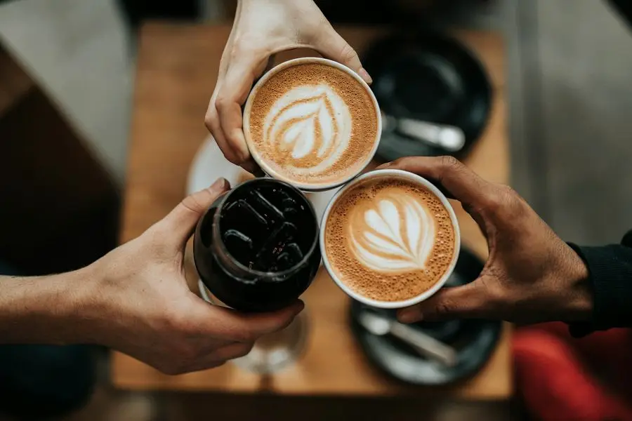
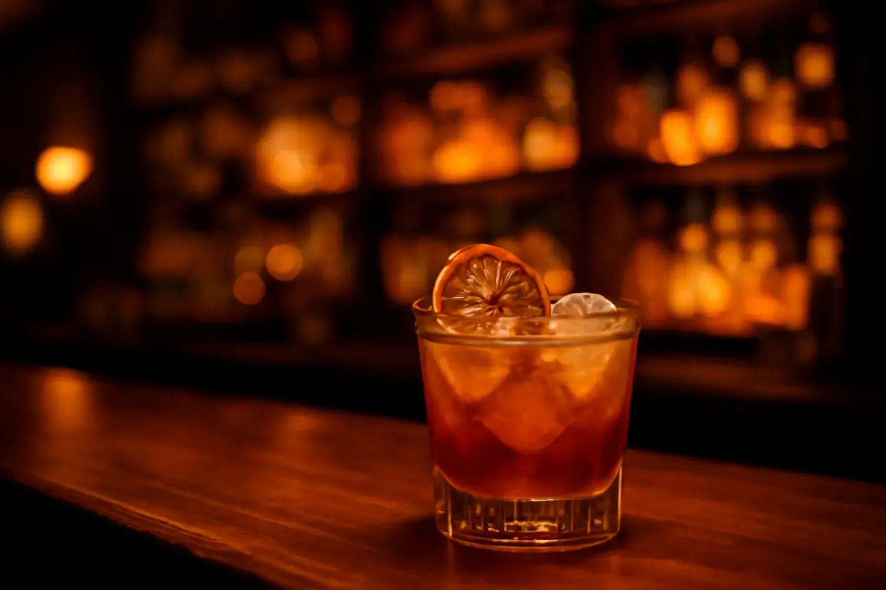
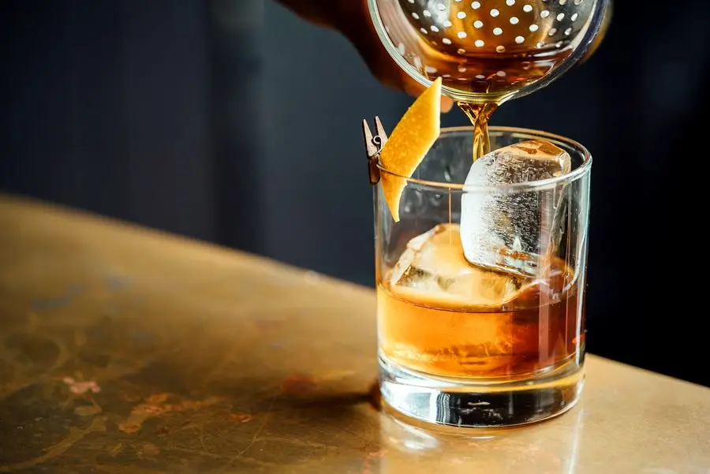
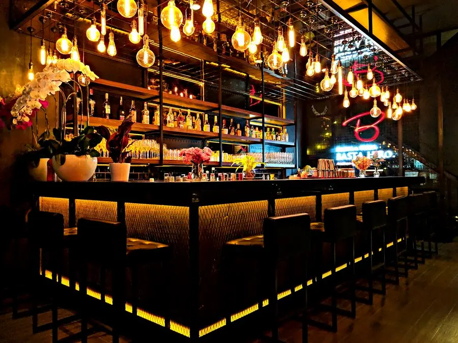

08:00 · Mañana
Desayunos al sol
Tostadas, café de especialidad y el clásico full English. Para arrancar el día como toca.
Breakfast · served all morning

Desayunos al sol, fútbol en directo y coctelería hasta la madrugada. Un solo sitio para todo el día — abierto cada día de 08:00 a 01:00.
Empieza con el café de la mañana, súbete a la tensión del partido y termina con un cóctel bien hecho. Sin cambiar de sitio.

Tostadas, café de especialidad y el clásico full English. Para arrancar el día como toca.
La Liga y la Premier en pantalla grande, con cerveza fría y el ambiente de siempre.

De un gin-tonic bien servido a un clásico de coctelería. La noche de Benidorm, en tu vaso.
Nacimos en el corazón de Benidorm para ser ese sitio al que se vuelve. Acogedor por la mañana, vibrante por la noche, siempre con buen ambiente.
Nos quieren tanto los turistas — sobre todo nuestros amigos británicos — como el público local que busca calidad, trato cercano y un partido bien acompañado. Aquí cada visita se siente como en casa.

Da igual si juega el Madrid, el Barça, el United o el City: aquí no te pierdes un gol. Pantallas grandes, buen sonido y el ambiente que solo tiene ver el fútbol en compañía.
Una selección de lo que más piden. La carta completa, siempre a mano en la barra.
Precios orientativos · Consulta la carta completa y las sugerencias del día en el local.
Pregunta por WhatsApp